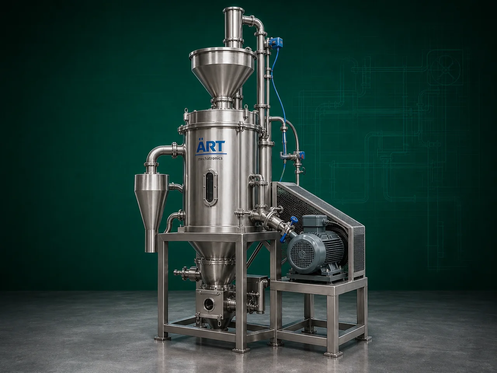

Polisher Machine (Industrial Surface Finishing & Product Polishing System)
A Polisher Machine, also known as an Industrial Polishing Machine or Grain Polisher, is a specialized industrial equipment designed for improving the surface finish, shine, smoothness, cleanliness, and appearance of grains, pulses, seeds, nuts, spices, and food products through friction, brushing,…

About the Polisher Machine
The machine enhances: ✔ Product appearance ✔ Product market value ✔ Surface cleanliness ✔ Product texture ✔ Export quality standards
Polisher machines are widely used in industries such as:
• Rice mills
• Pulses processing plants
• Seed processing industries
• Spice industries
• Food processing plants
• Nut processing industries
• Agro product industries
where high-quality finishing and uniform product appearance are essential.
The machine operates using: ✔ Friction polishing ✔ Brush polishing ✔ Water polishing ✔ Air polishing ✔ Abrasive polishing systems
depending on the product and finishing requirement.
Polisher machines are highly suitable for: ✔ Rice polishing ✔ Pulse polishing ✔ Seed polishing ✔ Nut surface finishing ✔ Spice polishing ✔ Food product finishing
ART Mechatronics offers high-performance polisher machines, engineered for uniform polishing, hygienic processing, energy-efficient operation, and reliable industrial performance.
One machine, many names
Buyers search for this equipment under many terms — we manufacture all of them:
Working Principle of Polisher Machine
Depending on machine type, polishing occurs using: ✔ Friction action ✔ Rotating brushes ✔ Abrasive surfaces ✔ Air polishing systems ✔ Water mist polishing
Removes surface dust, roughness, and impurities
Types of Polisher Machines
- 1. Rice Polisher Machine
Specially designed for: ✔ White rice polishing ✔ Surface finishing and shine enhancement
- 2. Pulse Polisher Machine
Used for: ✔ Dal polishing ✔ Pulse surface cleaning and finishing
- 3. Seed Polisher Machine
Suitable for: ✔ Seed surface treatment and finishing
- 4. Brush Polisher Machine
Uses: ✔ Rotating brush system for gentle polishing applications.
- 5. Abrasive Polisher Machine
Uses: ✔ Abrasive friction technology for intensive polishing applications.
- 6. Water Polisher Machine
Uses: ✔ Fine water mist and friction polishing for premium finishing quality.
Industries Using Polisher Machine
🍚 Rice Mill Industry
- Rice polishing and finishing
🍃 Pulses Industry
- Dal polishing and surface cleaning
🌱 Seed Processing Industry
- Seed polishing and preparation
🌶️ Spice Industry
- Spice surface finishing and cleaning
🥜 Nut Processing Industry
- Nut polishing and appearance enhancement
🍃 Food Processing Industry
- Product finishing and quality improvement
Features & Advantages
✔ Improves product appearance and shine ✔ Enhances market value and export quality ✔ Removes surface dust and impurities ✔ Uniform polishing and finishing ✔ Continuous industrial operation ✔ Heavy-duty industrial construction ✔ Low maintenance requirement ✔ Energy-efficient operation ✔ Hygienic and easy-to-clean design
Technical Highlights
- Polishing Technology:
- Friction polishing
- Brush polishing
- Abrasive polishing
- Water polishing
- Construction: Stainless Steel / Mild Steel
- Dust Removal:
- Blower and aspiration system
- Capacity: Small to large industrial throughput
- Operation:
- Batch type
- Continuous type
- Automation:
- Semi-automatic
- Fully automatic PLC-based
Turnkey Polishing Solutions
ART Mechatronics offers:
- Complete polishing and finishing systems
- Dust collection integration
- Cleaning and grading line integration
- Conveying and handling systems
- Installation & commissioning
- After-sales service & AMC
Why Choose Art Mechatronics
- Expertise in industrial food and agro processing systems
- Customized polishing solutions for multiple products
- High-performance and durable machine construction
- Energy-efficient and reliable industrial designs
- Proven industrial performance across sectors
Applications
- Rice Mills
- Pulse Processing Plants
- Seed Processing Units
- Spice Manufacturing Facilities
- Nut Processing Industries
- Food Processing Plants
Related Cleaning, Sorting & Grading machines
Get pricing & specs for the Polisher Machine
Share the product, target capacity, current process and plant location. These details help our engineers discuss the right machine or line configuration.
One partner, from design to start-up
ART Mechatronics designs, manufactures, installs and commissions your Polisher Machine solution with regional presence in India, UAE and Thailand.